Flow budowania listingu · 3MK-BS-W-BSCeDiL-VWGDP24
1
Treść
tytuł, bullety, opis DE wariantu (z rodziny)
INPUT/listingi/3mk_bladeshield_vw_de.json2
Galeria
7 zdjęć 1600 px (MAIN + PT01-PT06)
OUTPUT/listing-vw/przyklad_3MK-BS-W-BSCeDiL-VWGDP24/galeria/3
A+
7 modułów 1464×600 + 7 mobile 600×450, wspólne dla rodziny
OUTPUT/listing-vw/aplus/4
Wideo
nasze PL (podgląd) i DE (amazon.de) gotowe; montaż 3mk: brak MP4
OUTPUT/listing-vw/wideo/5
Compliance
GPSR PDF wariantu
OUTPUT/compliance/6
Flat file
DRAFT bez szablonu konta 3mk Automotive
OUTPUT/listing-vw/vw_bladeshield_DE_flatfile_DRAFT.xlsx7
Wgranie
BLOKADA: Brand Registry 3mk (rola konta 3mk Automotive)
Seller Central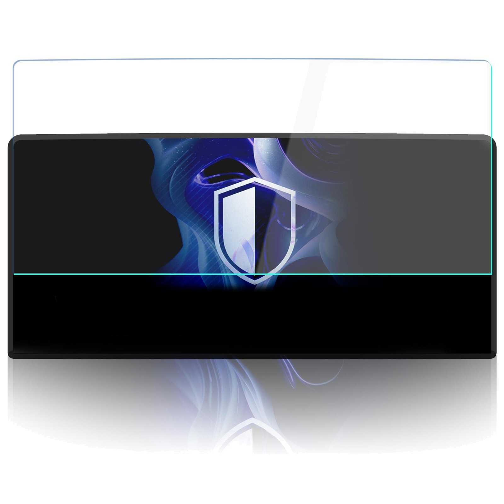
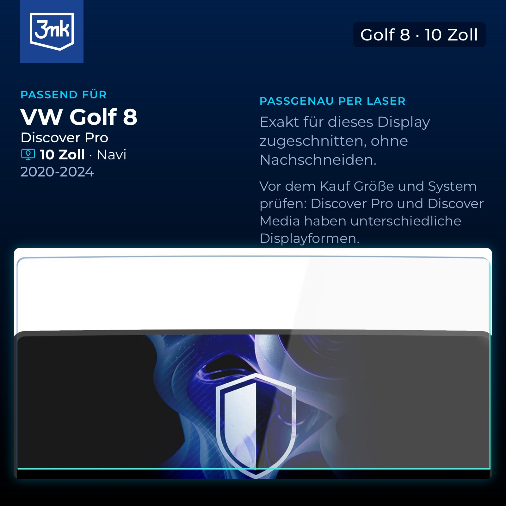
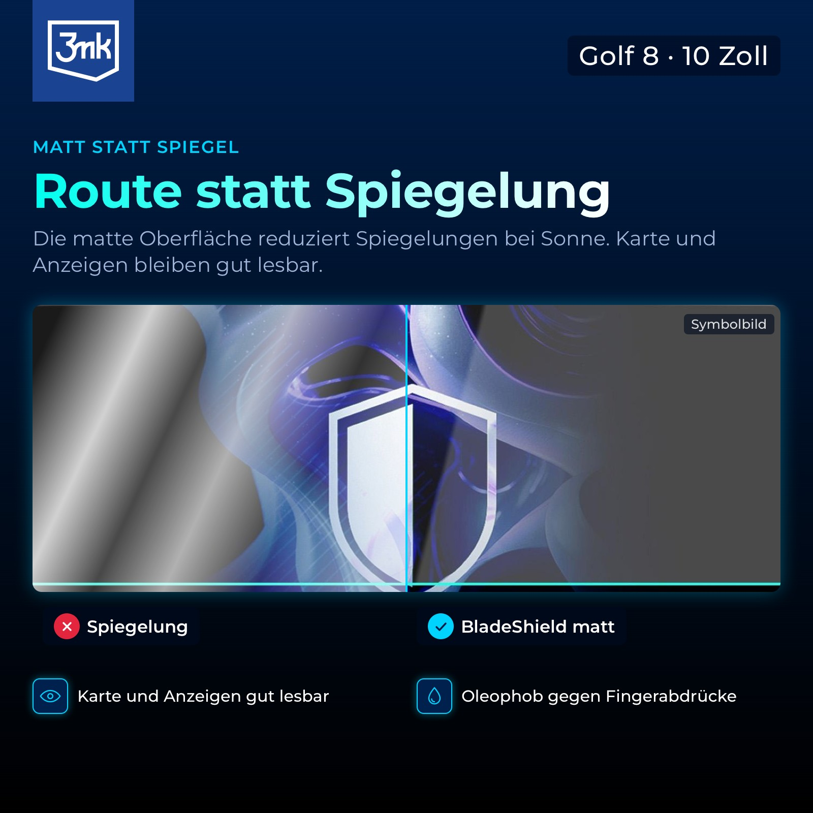
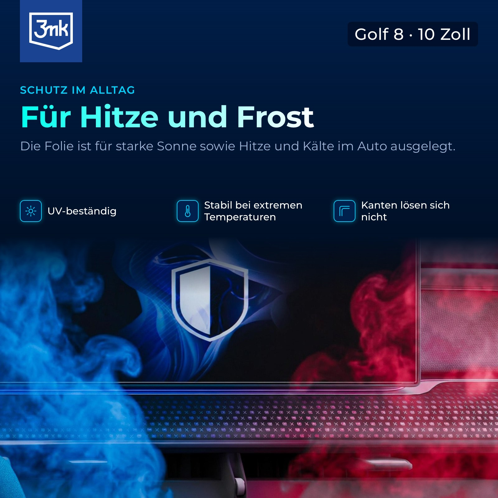
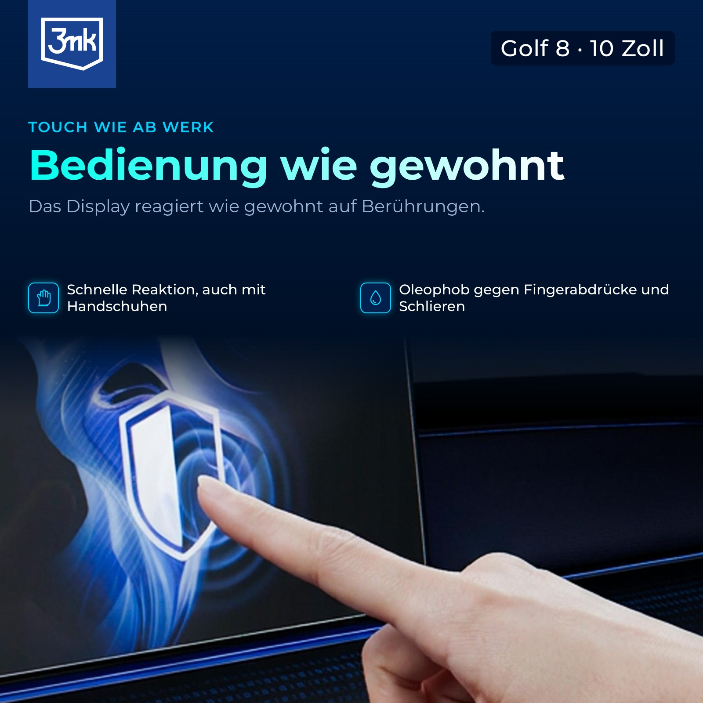
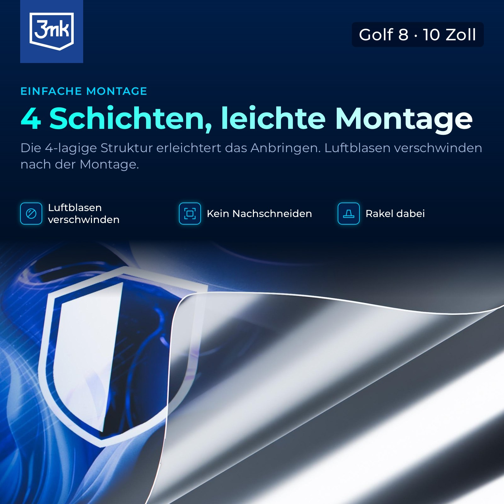
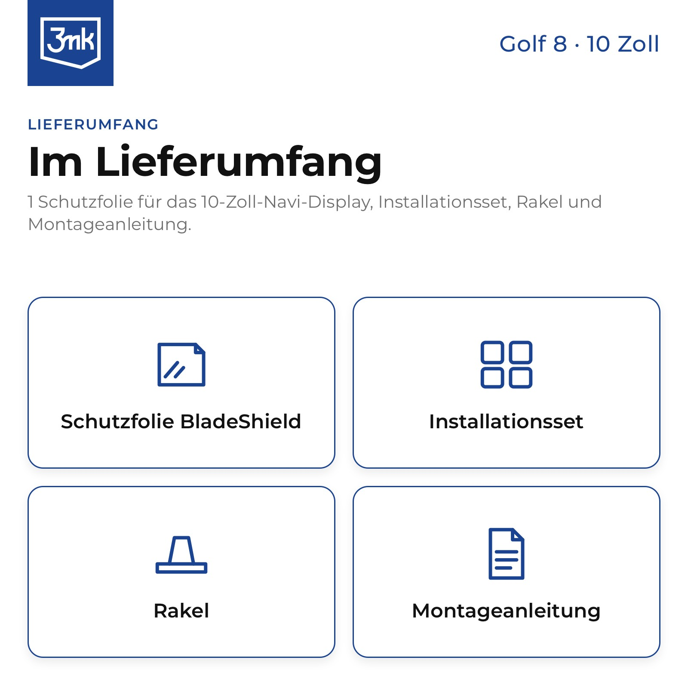
▶WIDEO PL
 ▶3mk YouTube
▶3mk YouTubeBesuche den Store von 3mk
3mk Schutzfolie für VW Golf 8 Discover Pro (2020-2024), 10-Zoll-Navi
1 Stück · BladeShield™ · Matt, Anti-Reflex · Passgenau per Laser · Touch auch mit Handschuhen
Modell: Golf 8 Discover Pro 10 Zoll (2020-2024) · Navi
Golf 8 Discover Pro 10 Zoll (2020-2024) · Navi+57 weitere Varianten
Golf 8 Discover Pro 10 Zoll (2020-2024) · Navi+57 weitere Varianten
€3090
Auf Lager
Über diesen Artikel
- [ACHTUNG] NUR FÜR 10-ZOLL-NAVI-DISPLAYS: Bitte prüfen Sie vor dem Kauf die Bildschirmgröße und das System in Ihrem Fahrzeug (Discover Pro). Discover Pro und Discover Media sowie Navi und Tacho haben unterschiedliche Displayformen. Folien für weitere Displays finden Sie in der Variantenauswahl.
- KOMPATIBILITÄT: Kompatibel mit VW Golf 8 (2020-2024), Navi-Display (Mittelkonsole), Discover Pro, 10 Zoll. Passgenau per Laser für dieses Display zugeschnitten, ohne Nachschneiden. Zubehör von 3mk Protection, kein Originalteil des Fahrzeugherstellers.
- MATT STATT SPIEGEL: Die matte Oberfläche von BladeShield™ reduziert Spiegelungen bei Sonne, damit Karte und Anzeigen gut lesbar bleiben. Die oleophobe Beschichtung reduziert Schlieren und Fingerabdrücke, das Display ist schnell gereinigt.
- TOUCH WIE AB WERK, FÜR HITZE UND FROST: Das Display reagiert wie gewohnt auf Berührungen, auch mit Handschuhen. Die Folie ist UV-beständig, bleibt bei extremen Temperaturen stabil und löst sich nicht an den Kanten.
- EINFACHE MONTAGE OHNE BLASEN: Die 4-lagige Struktur von BladeShield™ erleichtert das Anbringen, Luftblasen verschwinden nach der Montage. Lieferumfang: Schutzfolie, Installationsset, Rakel und Montageanleitung.
Wideo produktowe · nie z flat file'a, wgrywasz osobno
Film montażu 3mk · YouTube, tylko podgląd
Film 3mk z YouTube „3mk MOTIO BladeShield™ · Jak zamontować?” (2:19, napisy PL). Do wgrania na Amazon potrzebny plik MP4 od 3mk (najlepiej bez wypalonych napisów PL).
Od producenta (A+ Premium) · nie z flat file'a, wgrywasz osobno w A+ Content Manager; wspólne dla 58 wariantów (Navi i Tacho), więc moduły A01-A03 wspominają też Tacho
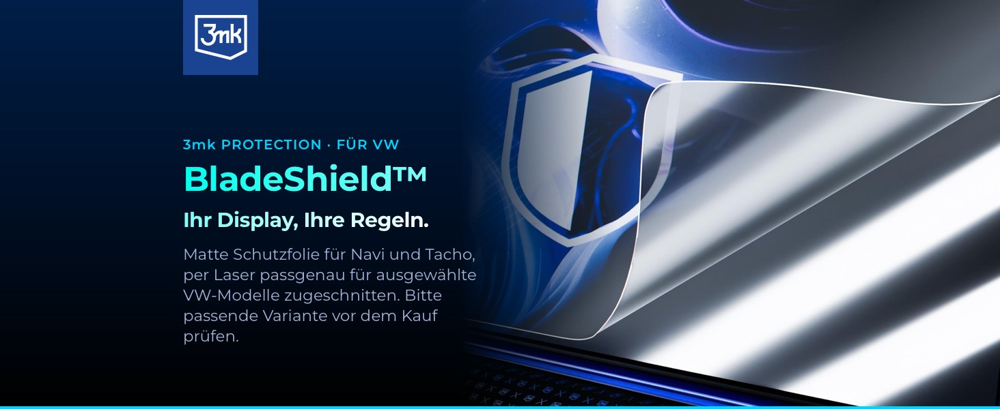
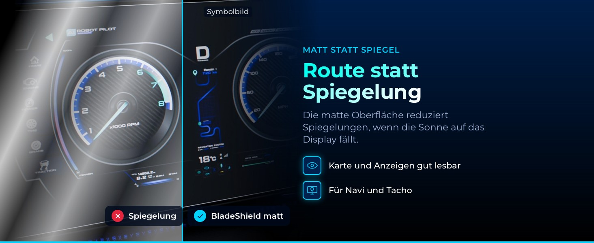
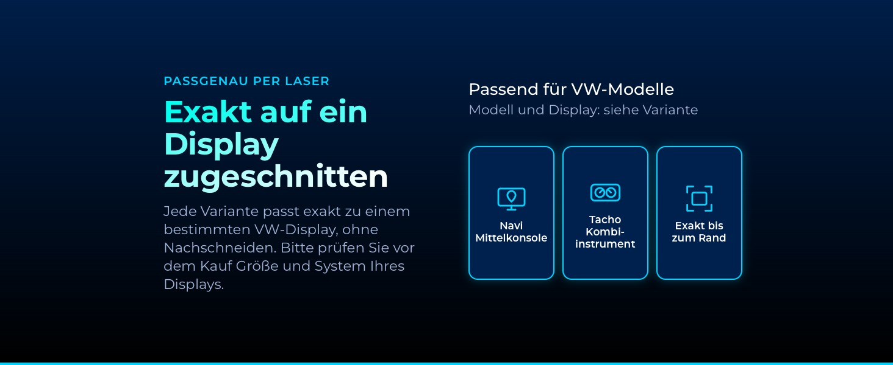
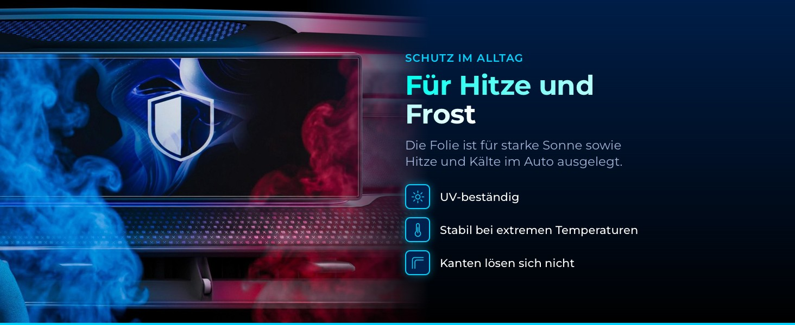
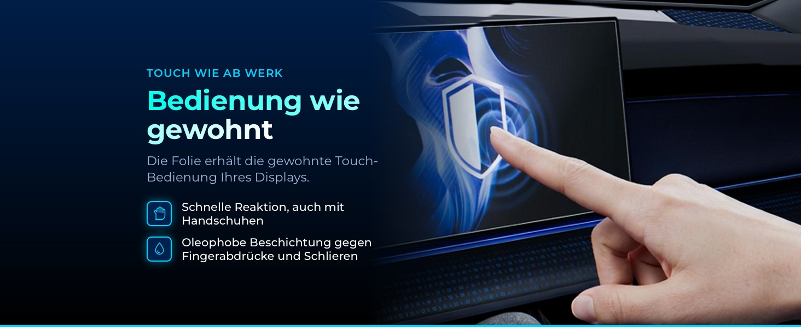
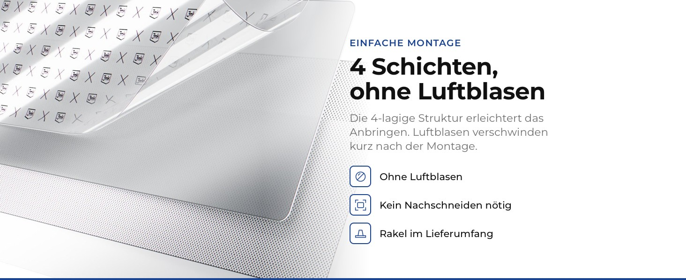
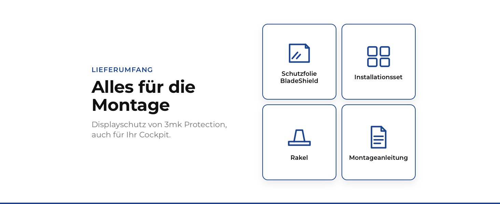
Produktinformationen
| Marke | 3mk |
|---|---|
| Hersteller | 3mk Protection |
| Modellnummer | W-BSCeDiL-VWGDP24 |
| Modellname | Golf 8 Discover Pro 10 Zoll (2020-2024) · Navi |
| Farbe | Transparent |
| Anzahl der Artikel | 1 |
| Kompatibles Fahrzeug | VW Golf 8 (2020-2024) |
| Garantie | 24 Monate Herstellergarantie |
| Lieferumfang | Schutzfolie BladeShield, Installationsset, Rakel, Montageanleitung |
| EAN | 5903108769204 |
| SKU | 3MK-BS-W-BSCeDiL-VWGDP24 |
| ASIN | noch keine (neuer ASIN nach dem Upload) |
| Produktsicherheit (GPSR) | Sicherheitsinformationen (PDF) |
Produktbeschreibung
3mk BladeShield™ Schutzfolie für VW Golf 8 (2020-2024), Navi-Display (Mittelkonsole), Discover Pro, 10 Zoll
Sonne macht das Display zum Spiegel? Die matte Schutzfolie BladeShield™ von 3mk Protection reduziert Spiegelungen, damit Sie die Route sehen und nicht die Spiegelung. Sie ist per Laser exakt für dieses Display zugeschnitten und lässt sich wie ab Werk bedienen, auch mit Handschuhen.
Technische Daten
Typ: Displayschutzfolie, matt Kompatibilität: VW Golf 8 (2020-2024), Navi-Display (Mittelkonsole), Discover Pro, 10 Zoll Oberfläche: matt, Anti-Reflex, oleophobe Beschichtung Beständigkeit: UV-Strahlung, Hitze und Frost; Kanten lösen sich nicht Funktionen: Touch wie ab Werk, auch mit Handschuhen Montage: 4-lagige Struktur, blasenfreie Montage, Laserzuschnitt
Lieferumfang
Schutzfolie BladeShield™ Installationsset Rakel Montageanleitung
Bitte prüfen Sie vor dem Kauf Größe und System Ihres Displays. Zubehör von 3mk Protection, kein Originalteil des Fahrzeugherstellers.
Sonne macht das Display zum Spiegel? Die matte Schutzfolie BladeShield™ von 3mk Protection reduziert Spiegelungen, damit Sie die Route sehen und nicht die Spiegelung. Sie ist per Laser exakt für dieses Display zugeschnitten und lässt sich wie ab Werk bedienen, auch mit Handschuhen.
Technische Daten
Lieferumfang
Bitte prüfen Sie vor dem Kauf Größe und System Ihres Displays. Zubehör von 3mk Protection, kein Originalteil des Fahrzeugherstellers.